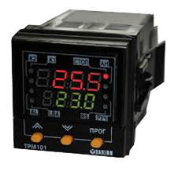

Добро пожаловать в веб-интерфейс управления реле-таймером ТРМ-101

О приборе
ТРМ-101 — это программируемый реле-таймер, предназначенный для автоматизации различных процессов путем управления подключенными устройствами по заданному расписанию.
Основные возможности:
- Управление 4 независимыми релейными каналами
- Программирование расписания работы на неделю
- Ручное и автоматическое управление
- Ведение журнала событий и переключений
- Удаленное управление через веб-интерфейс
Краткое руководство
- Перейдите в раздел "Управление" для ручного контроля реле
- В разделе "Расписание" настройте временные интервалы работы
- Используйте "Настройки" для конфигурации параметров системы
- Просматривайте "Журнал" для отслеживания активности прибора